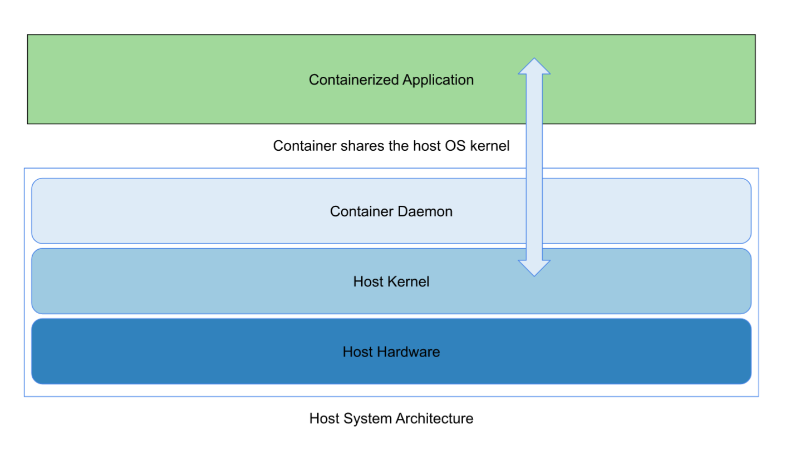
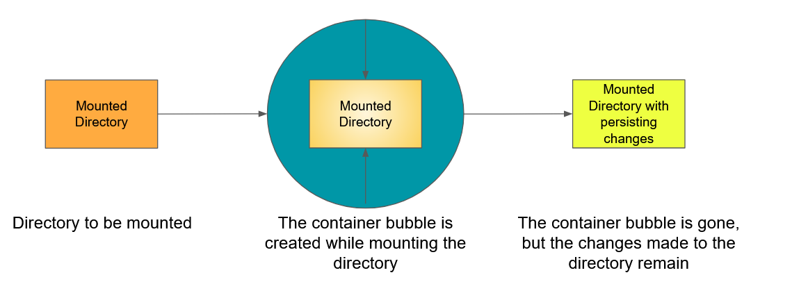
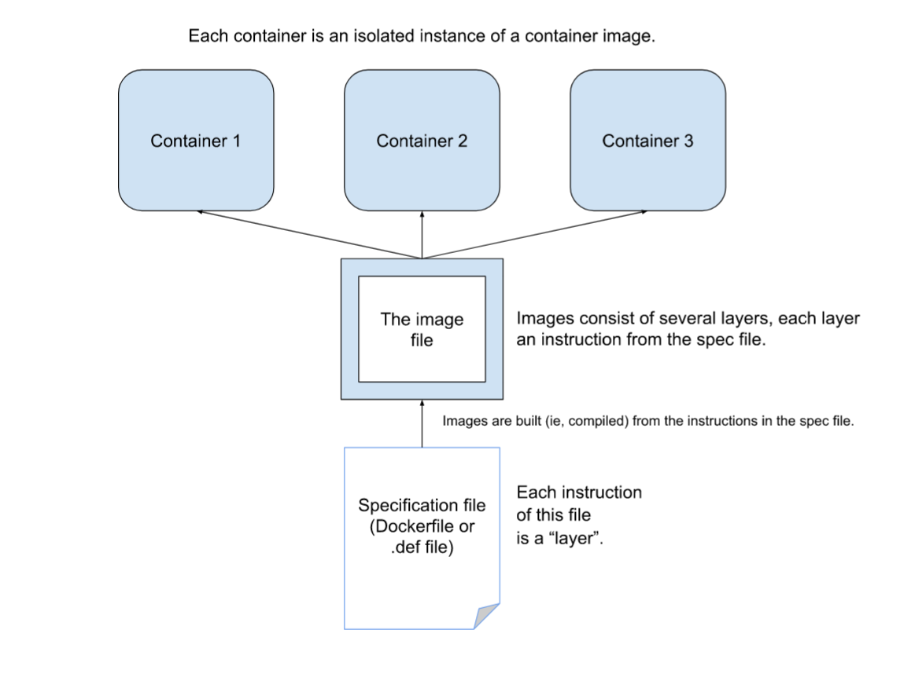

Docker, Singularity, and HPC.

Containers
Containers are environments that are intended to be lightweight and standalone software, with isolation from the host machine, which ensures that containers work uniformly across different staging and development instances.
Containers share the host OS’s kernel and do not require an OS per application, which is a key difference between containers and virtual machines, which otherwise share a lot of similarities.

Containers can be built using specifications (most commonly, a dockerfile for Docker containers, and a definition(def) file for Singularity.)
These specification files are simple text files that are merely an aggregation of instructions to the container client to set up the container image.
The packages installed according to the specifications could be wildly different from the host OS packages and software, and this won’t result in any conflicts between the container and the host system since they are isolated from each other, merely sharing the host OS kernel.
Containers are not interchangeable with images!
Images and containers are two different entities. Containers are instances of images, and depending on the container client used, they may or may not be immutable.
When a container is removed, any changes to its state that are not stored in persistent storage disappear.
In this post, I will be going over two common platforms that can be used to run containers, and this will be purely in the context of use in HPC environments. These are Docker and Singularity.
Container Mounting
Containers and the changes made to the container do not persist after the container instance is killed.
It is possible to “mount” data directories on the host machine into the container instance, allowing for the changes made to the host system directory to persist after the container instance is killed.

Container Lingo
Containers are built from images.
Images are built from a series of read-only “layers”, and each one of these layers are instructions from the specification file(most commonly, a dockerfile for Docker containers, and a definition(def) file for Singularity.) that was used to build an image.
Think of images as the template from which containers are run.
A container is a running instance of an image, and they are isolated from the host system.

Docker Containers
Docker is an open platform that allows for separation of development tools and processes from your native infrastructure. It provides the ability to run processes in an semi-isolated environment called a container.

Generally speaking, containers are isolated from the host machine, and depending on the commands used, the changes made within the container will not persist on the host machine. This ensures that containers work uniformly across different staging and development instances. Docker (unless specifically instructed to do otherwise) is isolated from the host system’s directories.
Docker is specifically intended for:
- Application Development.
- Distributing and testing of an application.
- Deploying applications in a production environment for further testing.
- Sharing builds across teams and collaborators.
An important feature to note about Docker is that it runs the container with root privileges. Allowing a user to use Docker is basically allowing them to have full root access. This is by design; running containers (and applications) with Docker implies running the Docker daemon, and the Docker daemon requires root privileges.
This, in conjunction with the ability to mount folders and files from the host system allows any user who is allowed to run Docker containers and commands to basically have root access!
Docker Containers are built from Docker images, which are compiled from dockerfiles.
Singularity
Singularity is an open source tool that was created to run complex applications specifically on HPC clusters.

Singularity is focused on integration over isolation, and the SIF container format is lightweight and easy to transport and share.
Singularity containers retain the permissions of the user launching the container instance, ensuring that users are not given permissions that they did not have in the host system.
Singularity supports integration with Batch Scheduling and Resource Managers commonly used in HPC environments, like SLURM and PBS, and the synergy of the lightweight nature of containers with the resource efficient batch submission capabilities of SLURM provide a fantastic working relationship in the context of HPC clusters.
Furthermore, Singularity containers can be built to be immutable (production build). This means that the Singularity image file is read-only. For example, if you were to create a container that has data and performs an analysis on that data, and you wanted to share the container and the data without allowing for it to be edited in any manner, production build Singularity containers would be perfectly suited for that.
Although, if you did want a Singularity image to be writable, or to have a writable folder, there are options for that!
- The
--sandboxoption allows for building the image into a writable directory. - The
--writableoption allows for building into an ext3 image file, that has writable permissions. (Note that the production build Singularity containers are in the read-only squashfs format.)
Note that usage of these two options will require sudo privileges, futher making it well suited for use in a HPC cluster.
The Singularity flow consists of two environments.
- A build environment (user needs to have sudo privileges) for testing purposes, allowing for the image or a directory within the image to be writable, using the above options.
- A production environment, where the image is in the immutable, read-only squashfs format.
The combination of the above factors means that Singularity is particularly well suited for use in HPC environments, allowing for:
- Content integrity(if using the immutable squashfs format)
- Reproducible environments, which facilitate simplicity in sharing scientific workflows
- Highly portable Image formats( The SIF file format is lightweight and super easy to share across networks.)
- Ensuring preservation of user permissions within the container
- Integration of the host system with the container file system, allowing for host documents to be integrated with the containers applications (depending on the permissions of the user.) While Singularity also allows for binding of host directories to the container directories (like Docker!), in addition to allowing for binding directories, by default, Singularity has static system-defined bind points, which are
$HOME,/tmp,/proc,/sysand/dev. The permissions of the user in the container are the same as the permissions of the user in the host system, ensuring that the containers are not given unnecessary permissions and access to files they shouldn’t have.
Docker vs Singularity in HPC clusters
Singularity is much better suited for use in HPC clusters compared to Docker containers.
| Feature | Docker | Singularity |
|---|---|---|
| Integration with batch submission and resource arbitration tools like SLURM and PBS | Requires custom scripting and configuration. SLURM container implementation requires that containers must run in unprivileged (rootless) invocation, and the oci.conf file on each node must be configured to allow Docker to run in rootless mode. | Specifically designed for integration with HPC clusters and use alongside SLURM. Pretty easy to integrate them. |
| Permissions and security | Docker provides the user in the container with root access, which is a big issue in HPC cluster usage. | Singularity preserves permissions across the host and container, and depending on the image format, the image can be immutable as well (read-only). |
| Isolation from host system | Docker favors isolation over integration, only allowing for directories from the host system to be accessed if mounted, with complete isolation from the host system otherwise. | Singularity favors integration over isolation. While directory mounting is allowed, by default, Singularity has system-defined bind paths that allow for the integration of the host directories with the container, and the preservation of permission ensures the container user cannot perform actions on these files that they cannot do in the host system. |
| Portability | Local transport of Docker images involves either the creation of cumbersome .tar files, or the uploading of the image to a registry. | Images are in a lightweight, easy to transport SIF format, which greatly enhances reproducibility of scientific environments, especially when using production builds. |
Further Reading and References
This post is only meant to cover the bare necessities of Docker containers and Singularity containers in the context of HPC computation. While I’ve done my best to be as descriptive as possible, it is always a good idea to peruse official documentation for your own enlightenment!
A lot of the information here comes from these links: